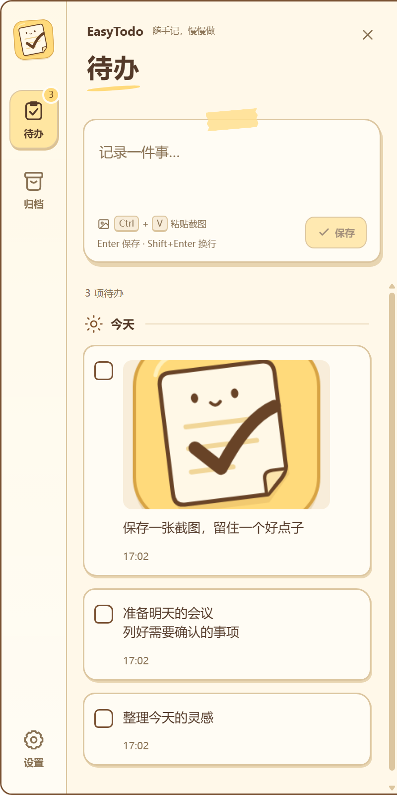
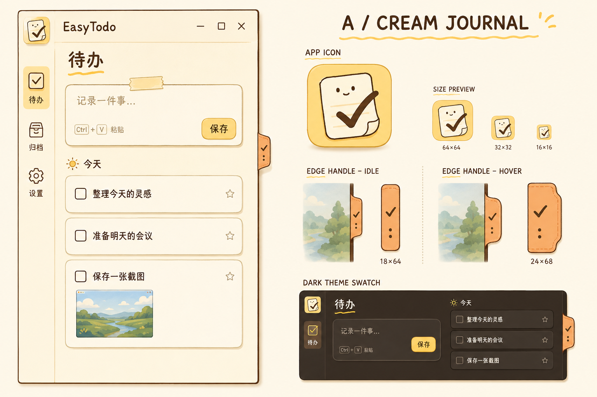

伸手就能记
悬停屏幕右侧的小书签，即可展开面板；也能用全局快捷键直接开始输入。灵感来的时候，不必找窗口。
一份轻巧的桌面日常 · v1.0.1
给转瞬即逝的灵感，
留一个温暖的小角落。
贴在屏幕边缘的奶油小手帐。文字、截图、临时待办，
随手放进来，再一件一件，慢慢完成。
无需账号，无需联网。
小事留在这里，数据留在本机。

浅色主题 · 实际应用截图
LESS FRICTION, MORE LITTLE WINS
不必整理复杂的项目结构。先记下来，就已经往前走了一步。
悬停屏幕右侧的小书签，即可展开面板；也能用全局快捷键直接开始输入。灵感来的时候，不必找窗口。
文字、截图，或截图加说明，都能直接保存。双击图片全屏查看，右键即可复制。
无需注册或连接云端。待办与图片以普通文件保存在电脑上，方便自行备份；完成后自动归档，让今天更清爽。
悬停右侧书签，或按下全局快捷键。
输入文字或粘贴截图，Enter 保存。
勾选完成即归档，误操作也能撤销。
A / CREAM JOURNAL
奶油纸张、胶带便签、笑脸清单。白天温柔，夜晚安静。

跟随你的主题浅色、深色或跟随系统，书签同步切换。
融入你的桌面托盘运行、可选开机启动、多显示器适配。
按照你的习惯自定义全局快捷键，Shift + Enter 轻松换行。
GOOD TO KNOW
不需要。EasyTodo 基于 MIT 协议开源，安装后即可使用，核心功能可离线运行。
默认保存在 %APPDATA%\EasyTodo。待办和设置位于 todos.json，图片位于 images 文件夹。备份前请从托盘退出应用，再复制这两项；本地文件未做应用层加密。
当前版本支持 Windows 10 / 11 x64。下载安装程序后运行即可，无需安装 Node.js。完整发行说明与 SHA-256 校验文件可在 GitHub Release 查看。
欢迎到 GitHub Issues 反馈。附上复现步骤、Windows 版本和屏幕缩放比例，会更方便定位问题。